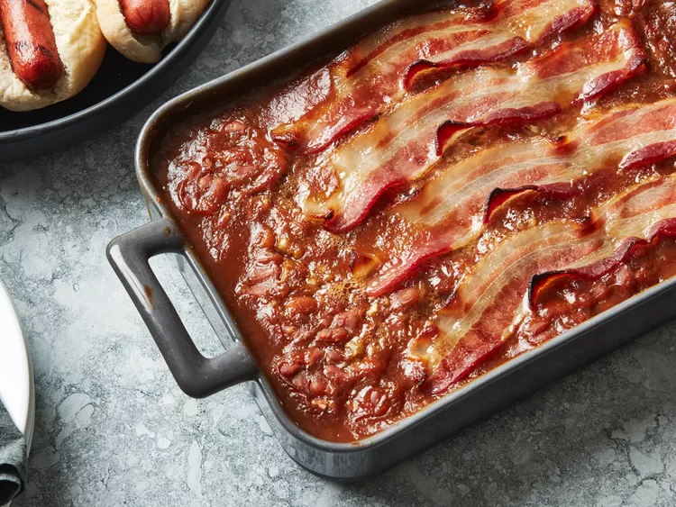

Better Baked Beans
Home

Description
Alright, get ready for some seriously delicious tangy, sweet, old-fashioned baked beans – and guess what? They're super easy to make because we're starting with canned beans!
This isn't just any recipe; it's my grandma's absolute favorite "semi-homemade" secret. She whips up a batch every Thanksgiving, and honestly, we pretty much scrape the pan clean every single time. Seriously, there are never any leftovers!
Ingredients
- 2 (28 ounce) cans baked beans
- 1 small onion, finely chopped
- 3 tablespoons maple syrup
- 2 tablespoons brown sugar
- 2 tablespoons ketchup
- 2 teaspoons prepared yellow mustard
- 4 slices bacon
Steps
- First things first, gather all your ingredients so you're ready to go. While you're doing that, go ahead and preheat your oven to 350 degrees F (175 degrees C).
- Grab a big bowl and mix together the baked beans, chopped onion, maple syrup, brown sugar, ketchup, and mustard. Give it a good stir until everything's happy together.
- Now, pour that yummy mixture into a 9x13-inch baking dish. Then, lay those bacon slices neatly across the top.
- Pop it into your preheated oven and bake for about 35 to 40 minutes. You'll know it's ready when the bacon is beautifully browned and the beans have thickened up nicely.